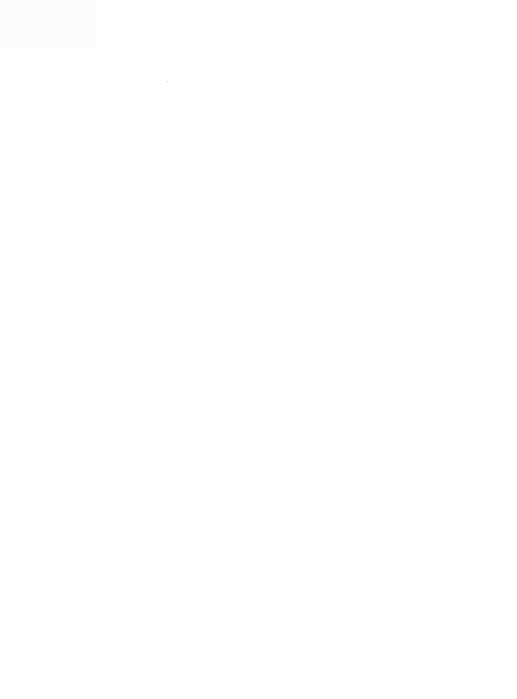

Резюме
Private info

- Возраст : Private info
- Город : Private info
- Телефон : Private info
- Почта : Private info
Профессиональные навыки
- Настройка серверов на базе MS Server 2008-2016 (AD, DNS, DHCP, VPN);
- Администрирование рабочих станций Win XP - Win 10;
- Docker, GIT, Ubuntu, SQL, Bash – базовые знания;
- Виртуализация серверов на базе VMWare/ Hyper-V;
- Администрирование системы Megapolis.DocNet
- Skype for business/Zoom администрирование конференций;
- Опыт работы с JIRA, Confluence, Slack;
- Автоматизация бекапирования данных (NAS, Synology);
- Работа с коммутаторами Cisco и Microtik, настройка точек доступа, работа с WinBox;
- Администрирование систем электронной почты ( Zimbra )
- Поддержка работы каналов связи и передачи данных.
- Настройка компьютеров по удаленному доступу;
- Настройка через SSH. Настройка подключения удаленных абонентов с использованием VPN через криптосервер;
- Установка новых рабочих станций, развертывание образов с использованием Acronis;
- Некоторые работы с АТС (PBX Unified Maintenance Console);
- проведение профессионального обучения с работниками структурных подразделений по вопросам использования
элементов информационной системы (технического и программного обеспечения);
Владение языками
- Английский — средний
- Русский, Украинский — свободный
- Немецкий - начинающий
Личные качества
- Быстрая обучаемость
- Умение работать в команде
- Инициативность
- Стрессоустойчивость
- Самостоятельность
- Ответственность
linkedin